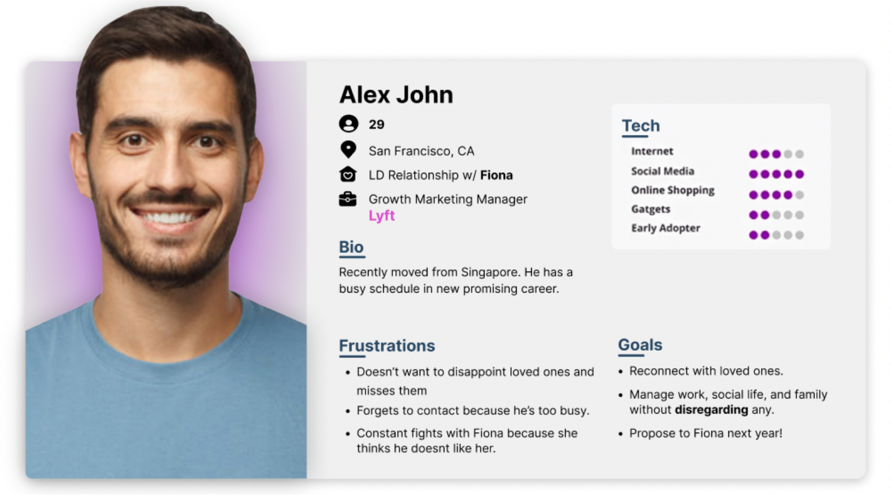
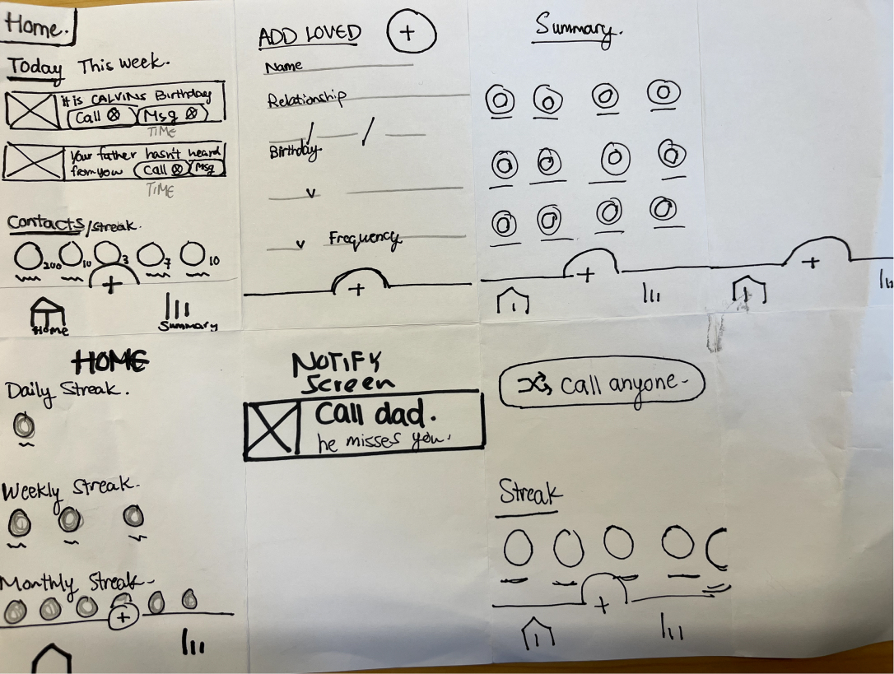

Habit Tracking App
Using AI to encourage contacting loved ones habitually
Using AI to encourage contacting loved ones habitually
Individual
A family system helps every one of its members through the good and the bad times. People want to contact their families more frequently, but so often find themselves distracted by work and their busy schedules, ultimately detaching from their loved ones.
During my UX/UI Bootcamp at IronHack, I was proposed with a project to The identify an opportunity (through user research) for an app to support building, or breaking, a habit. Furthermore, to craft a new mobile app in only mid-fi prototype, designed to meet the needs of the users based on research.
A smart tool that curates and suggests friendly reminders to contact people based on input will not only make contacting loved ones more attainable for busy users, but also encourage them to do so.
Due to time constraints and scope of the challenge, I conducted 5 face-to-face interviews with people who use their phones for more than 7 hours a day. All participants are aged between 27-36, living in Barcelona.
Can you tell me about how you use your phone?
I began all interviews with the question above. From there I interviewed each participant for around ~15 minutes to get down to their habits; thoughts; pain-points; even goals.
Interviewing them helped me better learn first-hand what habits are there to support or cut on and ultimately how they feel about it. I gained insight to how they have difficulties balancing their relationships with their families and work; their feelings and emotions when it comes to reaching out to family; or even their need to be constantly reminded.
Get backlash from parents for not calling them
Only call people when they need a favor
Forget and want to be reminded constantly
“I don’t know why, but I always forget to call my parents, and
they always get angry”
- Gizelle
“I feel guilty for not calling my niece anymore because im too
busy, we used to draw with each other over Facetime”
- Stephanie
“I should prioritize my family, but I also need to get
something in return”
- Calvin
After conducting the interviews, I created an affinity maps to pull together patterns and key information, then categorized them according to what they had in common. Ultimately, I did multiple rounds until I ended up with six main categories:
All interviewees wanted to speak more often to their families, however are having difficulties finding time; forget because they are distracted with their careers; need encouragement and motivation; even keep track of their calling frequency with ease and no thinking.
I came up with a user persona. It helps to better understand behaviours, experiences, needs and goals of potential users that would not have been obvious.
The specific task flow is as follows:
Alex launches the application and would like to add his Girlfriend, Fiona, to his contact list so he can be reminded to speak to her on a daily basis. He will add her and then wait for the app to suggest to him when to call her.
After zeroing in the top interesting ideas, I did a Crazy 8’s sketch just to get ideas on paper visually and get a feel for what my project would be. And again for three times until I reached this final sketch.
